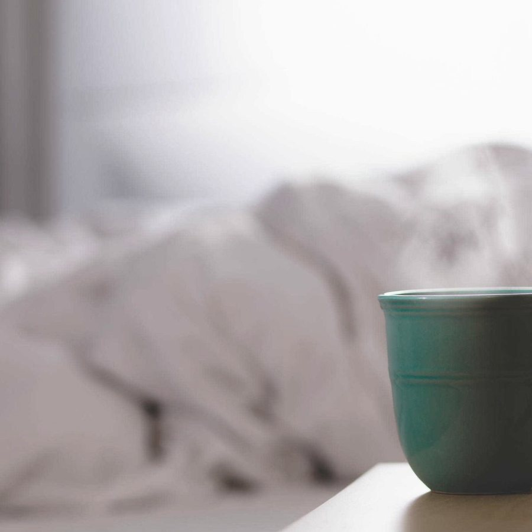
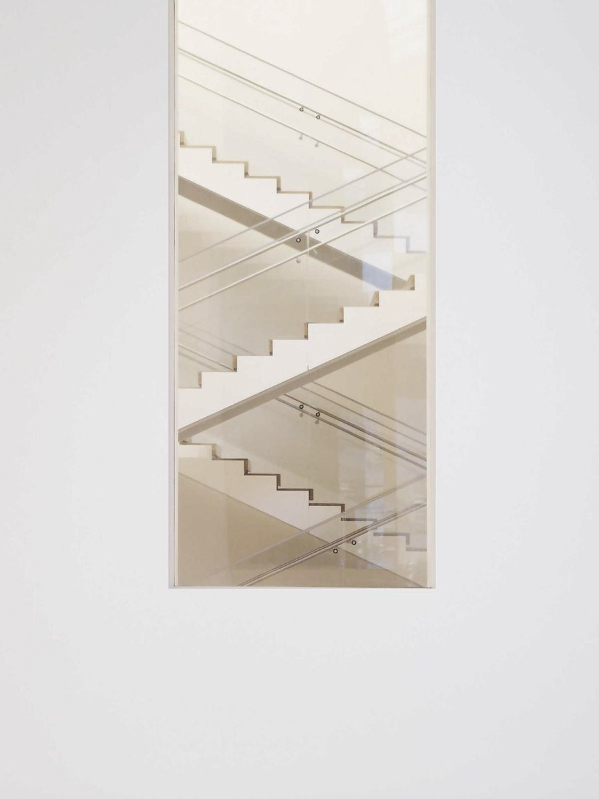
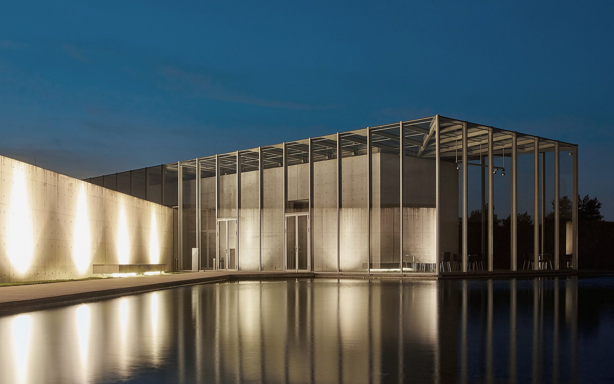
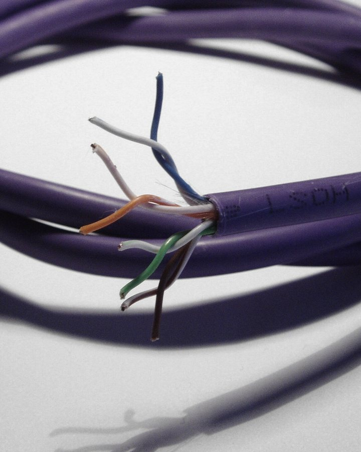
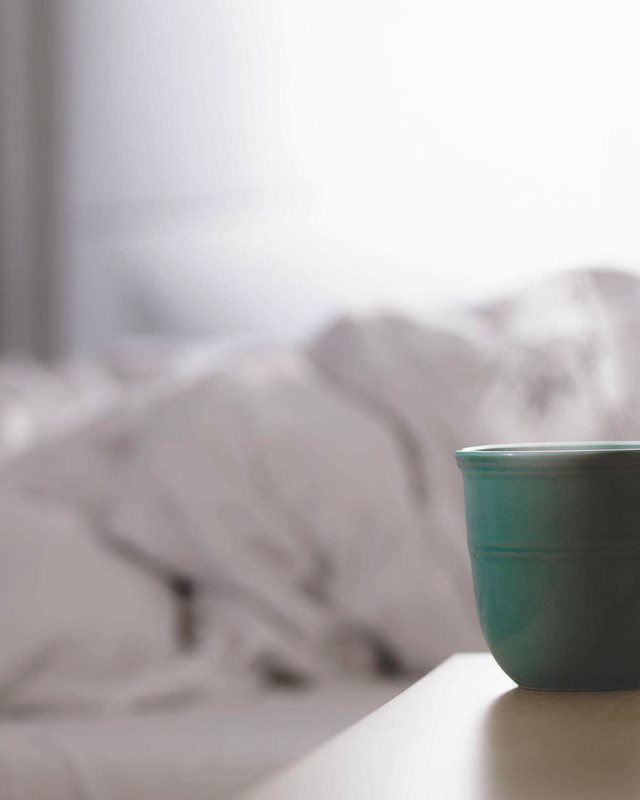
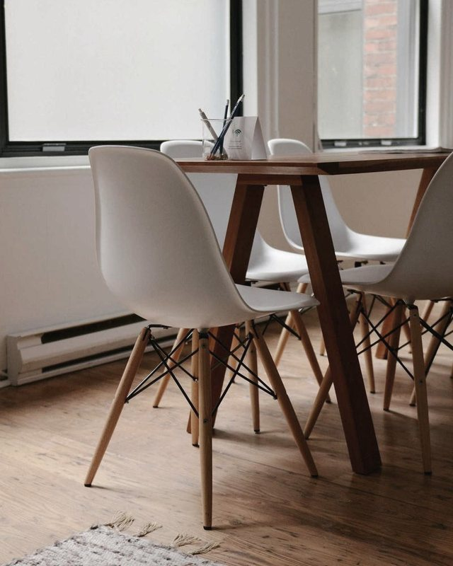
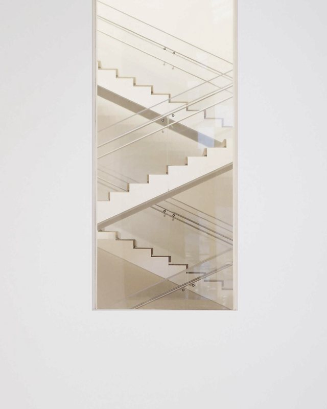
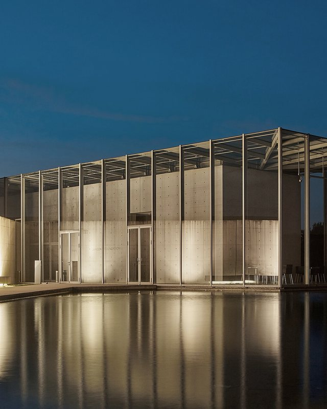
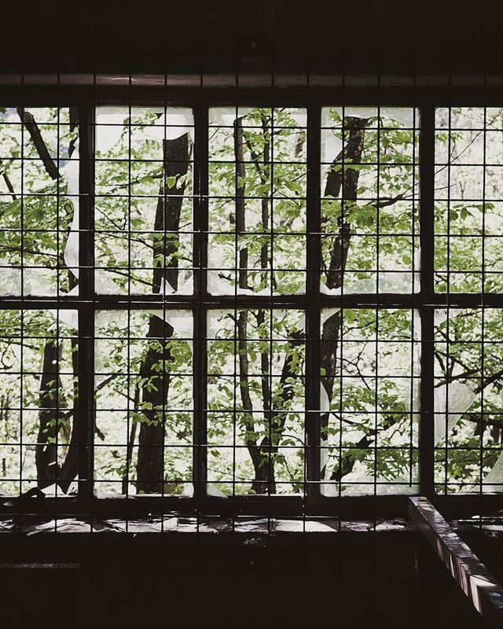
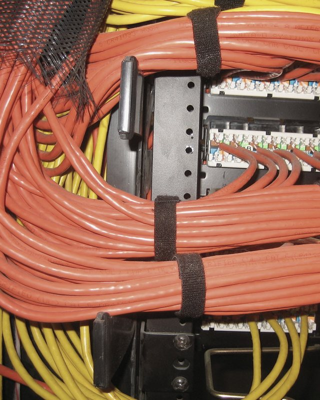

A smart home plan for a villa
A sample plan for the technology in a four-bedroom house: what goes where, what it costs, and how it is built, tested and handed over. A portfolio project by Alok Kulkarni.



Plan it before the walls go up
Most smart homes are added after the walls are finished, so they rely on Wi-Fi. This plan is made with the architect before building starts, so cables are built in and fewer devices need radio.

What the plan covers
Light and air
- Tunable-white lighting
- Circadian schedule
- Air-quality nodes
- Heat-recovery ventilation
- Kitchen extract
- Wired keypads
Water and energy
- Leak shut-off
- Water quality
- Night flow limit
- Circuit metering
- Solar-surplus loads
Network and safety
- Six VLANs
- Four access points
- Wi-Fi off at night
- Local recording
- Home Assistant hub
Hover a name to read what it means in this villa.
What the system does in one day
- 06:30 · Waking light
Bedroom lights rise from a 4% night path towards 2700 K, the way a morning would.

- 08:00 · Breakfast
The kitchen extract boosts with make-up air. PM2.5 is watched until the air settles.

- 13:00 · Full daylight
Lights harvest daylight at 5000 K. The ERV runs low and checks outdoor PM2.5 before it lets air in.

- 18:30 · Warming down
Light falls to 3000 K at 60%. A keypad press always wins, then the schedule returns.

- 21:16 · A tap left running
Flow and TDS are watched. On a leak the valve closes at once and the phone is told.
- 23:00 · Night
Lounge and study Wi-Fi switch off. Bedrooms hold near 800 ppm CO2 on a quiet boost.

- 02:00 · The rack room
One labelled cable from every device ends here, on a UPS. It keeps working if the internet does not.

The 11 documents
Contents
- {{DOCS}}
The whole scope comes to roughly ₹27 to 53 lakh with contingency, about USD 31,000 to 60,000. See the budget line by line.
Read the plan
Start with the brief and the assumed plan, or go straight to what it costs.